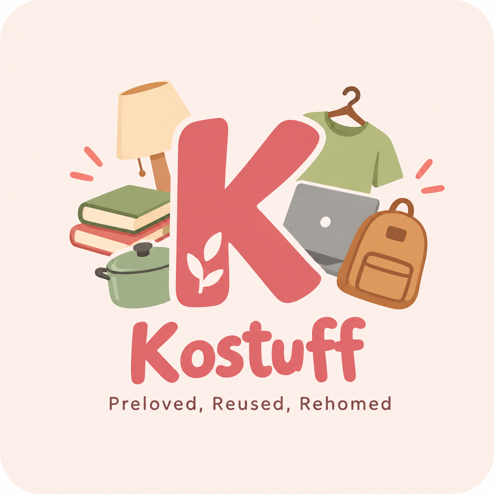

Give & Sell
Give away or sell items that you no longer need to other students from your campus.
PRELOVED • REUSED • REHOMED
Kostuff is a campus-based preloved hub that helps students give, find, and reuse items within their own campus community.
Explore Kostuff
WHAT YOU CAN DO
Give away or sell items that you no longer need to other students from your campus.
Search and filter preloved items based on category, condition, type, and price.
Connect with students from the same campus and arrange a convenient handover location.
ABOUT KOSTUFF
Students often have furniture, electronics, cooking equipment, room supplies, and other useful items that are no longer needed.
Kostuff connects students from the same campus so these items can be reused instead of being left behind or thrown away.
Back to HomeJoin your campus community and make reuse easier.
Join Kostuff